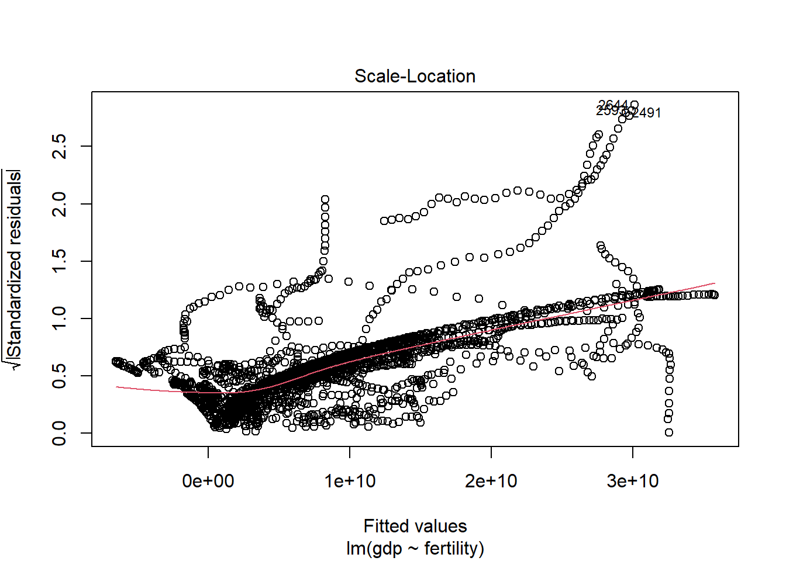

## load required packages
library(tidyverse)
library(dslabs)
library(ggplot2)R Coding Exercise
Loading/Examining Data
First, I want to take a look at the gapminder data I will be using from the ‘dslabs’ package.
#examine gapminder data frame
help("gapminder")starting httpd help server ... done#examine data structure
str(gapminder)'data.frame': 10545 obs. of 9 variables:
$ country : Factor w/ 185 levels "Albania","Algeria",..: 1 2 3 4 5 6 7 8 9 10 ...
$ year : int 1960 1960 1960 1960 1960 1960 1960 1960 1960 1960 ...
$ infant_mortality: num 115.4 148.2 208 NA 59.9 ...
$ life_expectancy : num 62.9 47.5 36 63 65.4 ...
$ fertility : num 6.19 7.65 7.32 4.43 3.11 4.55 4.82 3.45 2.7 5.57 ...
$ population : num 1636054 11124892 5270844 54681 20619075 ...
$ gdp : num NA 1.38e+10 NA NA 1.08e+11 ...
$ continent : Factor w/ 5 levels "Africa","Americas",..: 4 1 1 2 2 3 2 5 4 3 ...
$ region : Factor w/ 22 levels "Australia and New Zealand",..: 19 11 10 2 15 21 2 1 22 21 ...#look at summary of data
summary(gapminder) country year infant_mortality life_expectancy
Albania : 57 Min. :1960 Min. : 1.50 Min. :13.20
Algeria : 57 1st Qu.:1974 1st Qu.: 16.00 1st Qu.:57.50
Angola : 57 Median :1988 Median : 41.50 Median :67.54
Antigua and Barbuda: 57 Mean :1988 Mean : 55.31 Mean :64.81
Argentina : 57 3rd Qu.:2002 3rd Qu.: 85.10 3rd Qu.:73.00
Armenia : 57 Max. :2016 Max. :276.90 Max. :83.90
(Other) :10203 NA's :1453
fertility population gdp continent
Min. :0.840 Min. :3.124e+04 Min. :4.040e+07 Africa :2907
1st Qu.:2.200 1st Qu.:1.333e+06 1st Qu.:1.846e+09 Americas:2052
Median :3.750 Median :5.009e+06 Median :7.794e+09 Asia :2679
Mean :4.084 Mean :2.701e+07 Mean :1.480e+11 Europe :2223
3rd Qu.:6.000 3rd Qu.:1.523e+07 3rd Qu.:5.540e+10 Oceania : 684
Max. :9.220 Max. :1.376e+09 Max. :1.174e+13
NA's :187 NA's :185 NA's :2972
region
Western Asia :1026
Eastern Africa : 912
Western Africa : 912
Caribbean : 741
South America : 684
Southern Europe: 684
(Other) :5586 #examine object type
class(gapminder)[1] "data.frame"Processing Data
Now, I want to look closer at the African countries from the gapminder dataframe. I also want to look specifically at a few variables, so I will pull those out into new objects.
#select only African countries
africadata <-
filter(gapminder, continent=="Africa")
#select only infant mortality and life expectancy from africadata
obj1<-subset(africadata, select = c(infant_mortality, life_expectancy))
str(obj1)'data.frame': 2907 obs. of 2 variables:
$ infant_mortality: num 148 208 187 116 161 ...
$ life_expectancy : num 47.5 36 38.3 50.3 35.2 ...summary(obj1) infant_mortality life_expectancy
Min. : 11.40 Min. :13.20
1st Qu.: 62.20 1st Qu.:48.23
Median : 93.40 Median :53.98
Mean : 95.12 Mean :54.38
3rd Qu.:124.70 3rd Qu.:60.10
Max. :237.40 Max. :77.60
NA's :226 #select only population and life expectancy from africadata
obj2<-subset(africadata, select = c(population, life_expectancy))
str(obj2)'data.frame': 2907 obs. of 2 variables:
$ population : num 11124892 5270844 2431620 524029 4829291 ...
$ life_expectancy: num 47.5 36 38.3 50.3 35.2 ...summary(obj2) population life_expectancy
Min. : 41538 Min. :13.20
1st Qu.: 1605232 1st Qu.:48.23
Median : 5570982 Median :53.98
Mean : 12235961 Mean :54.38
3rd Qu.: 13888152 3rd Qu.:60.10
Max. :182201962 Max. :77.60
NA's :51 Plotting Data
Now I want to plot the data from the African countries to visualize any trends.
#plot life exp as a func of inf mortality
ggplot(data = obj1, aes(infant_mortality, life_expectancy))+
geom_point(cex=3, alpha=0.3)+
ylab("Life Expectancy (Yrs)")+
xlab("Infant Mortality (per 1000 Individuals)")+
ylim(0,85)+
theme_classic()
#plot life exp as a func of population size
ggplot(data = obj2, aes(log(population), life_expectancy))+
geom_point(cex=3, alpha=0.3)+
ylab("Life Expectancy (Yrs)")+
xlab(expression("Log"[e]*"(Population)"))+
theme_classic()
More Processing
These plots are pretty messy, since each country was sampled across numerous years. To clean this up, I want to first find missing values in the dataset.
#find missing values for infant mortality, then the years in which the data is missing
missing<-is.na(africadata$infant_mortality)
missing_years<-africadata$year[missing]
missing_years [1] 1960 1960 1960 1960 1960 1960 1960 1960 1960 1960 1961 1961 1961 1961 1961
[16] 1961 1961 1961 1961 1961 1961 1961 1961 1961 1961 1961 1961 1962 1962 1962
[31] 1962 1962 1962 1962 1962 1962 1962 1962 1962 1962 1962 1962 1962 1963 1963
[46] 1963 1963 1963 1963 1963 1963 1963 1963 1963 1963 1963 1963 1963 1963 1964
[61] 1964 1964 1964 1964 1964 1964 1964 1964 1964 1964 1964 1964 1964 1964 1965
[76] 1965 1965 1965 1965 1965 1965 1965 1965 1965 1965 1965 1965 1965 1966 1966
[91] 1966 1966 1966 1966 1966 1966 1966 1966 1966 1966 1966 1967 1967 1967 1967
[106] 1967 1967 1967 1967 1967 1967 1967 1968 1968 1968 1968 1968 1968 1968 1968
[121] 1968 1968 1968 1969 1969 1969 1969 1969 1969 1969 1970 1970 1970 1970 1970
[136] 1971 1971 1971 1971 1971 1971 1972 1972 1972 1972 1972 1972 1973 1973 1973
[151] 1973 1973 1973 1974 1974 1974 1974 1974 1975 1975 1975 1975 1975 1976 1976
[166] 1976 1977 1977 1977 1978 1978 1979 1979 1980 1981 2016 2016 2016 2016 2016
[181] 2016 2016 2016 2016 2016 2016 2016 2016 2016 2016 2016 2016 2016 2016 2016
[196] 2016 2016 2016 2016 2016 2016 2016 2016 2016 2016 2016 2016 2016 2016 2016
[211] 2016 2016 2016 2016 2016 2016 2016 2016 2016 2016 2016 2016 2016 2016 2016
[226] 2016Added by BETELIHEM G.
The above code creates a long list, how about only looking at unique missing numbers to narrow down the list and make it a bit easier
missing_years_unique<-unique(missing_years)Added by BETELIHEM G, then print to view
print(missing_years_unique) [1] 1960 1961 1962 1963 1964 1965 1966 1967 1968 1969 1970 1971 1972 1973 1974
[16] 1975 1976 1977 1978 1979 1980 1981 2016More Plotting
Now that I’ve found what years contain missing values for infant mortality, I am going to select a year without missing data points (2000) and recreate the plots from earlier using only data from that year.
#created new object with only data from year 2000
africadata2000<-
filter(africadata, year=="2000")
#plot life exp as a func of inf mortality for year 2000
ggplot(data = africadata2000, aes(infant_mortality, life_expectancy))+
geom_point(cex=3, alpha=0.3)+
ylab("Life Expectancy (Yrs)")+
xlab("Infant Mortality (per 1000 Individuals)")+
ylim(0,85)+
theme_classic()
#plot life exp as a func of population size for year 2000
ggplot(data = africadata2000, aes(log(population), life_expectancy))+
geom_point(cex=3, alpha=0.3)+
ylab("Life Expectancy (Yrs)")+
xlab(expression("Log"[e]*"(Population)"))+
theme_classic()
Statistical Analysis
Finally, I want to fit a linear regression to both of these functions to determine if there is any statistical significance.
#fit linear regression to both plotted functions
fit1<-lm(life_expectancy~infant_mortality, data = africadata2000)
summary(fit1)
Call:
lm(formula = life_expectancy ~ infant_mortality, data = africadata2000)
Residuals:
Min 1Q Median 3Q Max
-22.6651 -3.7087 0.9914 4.0408 8.6817
Coefficients:
Estimate Std. Error t value Pr(>|t|)
(Intercept) 71.29331 2.42611 29.386 < 2e-16 ***
infant_mortality -0.18916 0.02869 -6.594 2.83e-08 ***
---
Signif. codes: 0 '***' 0.001 '**' 0.01 '*' 0.05 '.' 0.1 ' ' 1
Residual standard error: 6.221 on 49 degrees of freedom
Multiple R-squared: 0.4701, Adjusted R-squared: 0.4593
F-statistic: 43.48 on 1 and 49 DF, p-value: 2.826e-08fit2<-lm(life_expectancy~population, data = africadata2000)
summary(fit2)
Call:
lm(formula = life_expectancy ~ population, data = africadata2000)
Residuals:
Min 1Q Median 3Q Max
-18.429 -4.602 -2.568 3.800 18.802
Coefficients:
Estimate Std. Error t value Pr(>|t|)
(Intercept) 5.593e+01 1.468e+00 38.097 <2e-16 ***
population 2.756e-08 5.459e-08 0.505 0.616
---
Signif. codes: 0 '***' 0.001 '**' 0.01 '*' 0.05 '.' 0.1 ' ' 1
Residual standard error: 8.524 on 49 degrees of freedom
Multiple R-squared: 0.005176, Adjusted R-squared: -0.01513
F-statistic: 0.2549 on 1 and 49 DF, p-value: 0.6159Based on these results, I can conclude that there is a significant negative effect of infant mortality on life expectancy (p = 2.83e-08) and that population size had no significant effect on life expectancy (p = 0.616).
The following was added by Vijay Panthayi
Let’s see if we can do anything else interesting with the africadata data set.
Let’s plot the GDP of each African country as a function of the country’s respective fertility (average number of children per woman).
First, we want to remove any data value that is missing.
missinggdp <- na.omit(africadata)Next, let’s create the plot with the new data set that removed all missing gdp values.
ggplot(data=missinggdp, aes(x=fertility, y=gdp)) +geom_point(size=2, shape=23)
It appears that generally, higher GDP occurs with lower fertility rates, however, the number of data points that show that is far lower than the mass at the bottom which tends to show that gdp and fertility rates have no correlation.
Let’s run a linear regression fit on the data to see if there is a trend in the data mathematically.
fitgdp <- lm(gdp~fertility, data = missinggdp)
summary(fitgdp)
Call:
lm(formula = gdp ~ fertility, data = missinggdp)
Residuals:
Min 1Q Median 3Q Max
-3.128e+10 -8.340e+09 -2.807e+09 2.178e+09 1.634e+11
Coefficients:
Estimate Std. Error t value Pr(>|t|)
(Intercept) 4.500e+10 1.833e+09 24.56 <2e-16 ***
fertility -6.097e+09 3.037e+08 -20.08 <2e-16 ***
---
Signif. codes: 0 '***' 0.001 '**' 0.01 '*' 0.05 '.' 0.1 ' ' 1
Residual standard error: 1.998e+10 on 2201 degrees of freedom
Multiple R-squared: 0.1548, Adjusted R-squared: 0.1544
F-statistic: 403.1 on 1 and 2201 DF, p-value: < 2.2e-16plot(fitgdp)
Based on these results, it is probable that there is no correlation between fertility and gdp. It appears that with a p-value of 2.2e-16, gdp is low regardless of fertility.